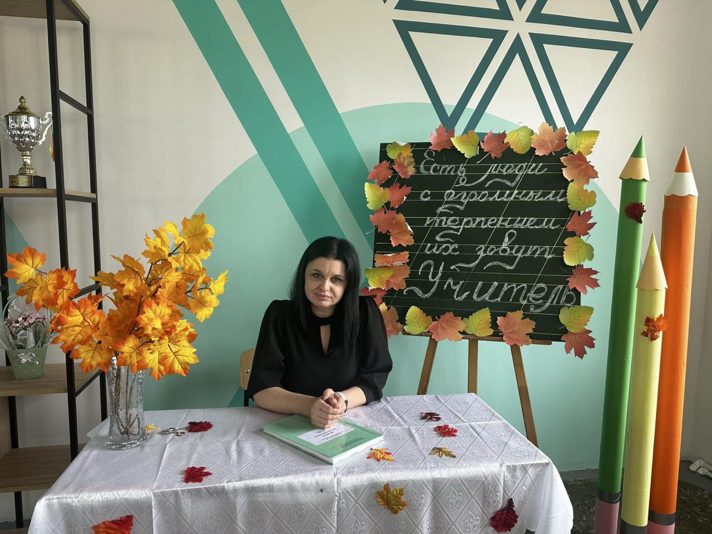

О лицее
Теоретический лицей им. Дмитрия Мавроди — современное государственное образовательное учреждение, расположенное в мун. Комрат.
Общая информация
ПУ «Теоретический лицей им. Дмитрия Мавроди» — государственное учебное заведение, осуществляющее образовательную деятельность в соответствии с национальными стандартами Республики Молдова.
Основной целью лицея является формирование интеллектуально развитой, социально ответственной личности, готовой к продолжению образования и активному участию в жизни общества.
История и традиции
Лицей имеет более чем полувековую историю. В 2024 году учреждение отметило 55-летие со дня основания.
В лицее действует мини-музей истории и этнографии, способствующий сохранению культурного наследия региона и воспитанию уважения к традициям.
Руководство лицея

Цилинская Анна Ивановна Зам. директора по учебно-воспитательной работе